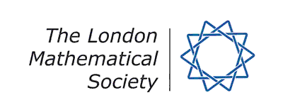

About the workshop
The main objective of this schools is to introduce PhD students
to some recent progress in the geometry of Fano varieties.
Fano varieties are of great interest in numerous parts of
mathematics such as algebraic, differential and arithmetic geometry,
due to the fascinating symmetries they possess.
Mini-courses
Teaching Assistants
Organisers
Silver COW at CambridgeThe next meeting of the COW will take place on the 25th anniversary of the first ever COW seminar, which was held in December 1992. To mark the occasion we will be returning to the location of that original meeting, at the University of Cambridge. The meeting will occur on Wednesday 6th December, with the first talk starting at 2pm. All talks will be held in room MR3. For more info, click here. |
|


For the construction of this website we heartily thank Jesus Martinez Garcia!
Financial support for the conference is kindly provided by|  |